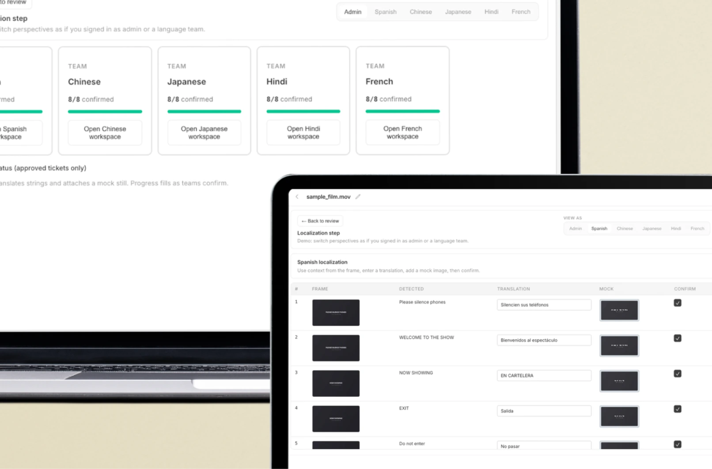

Extract across the timeline
Turn signs, subtitles, credits, and graphics into reviewable tickets—each tied to timecode and scoped to full films and long programmes, not isolated clips.
A collaborative workspace to extract, review, and localize on-screen text,
built for translator teams and long-form video.
Turn signs, subtitles, credits, and graphics into reviewable tickets—each tied to timecode and scoped to full films and long programmes, not isolated clips.

Give every locale a clear next step: translate in context, adapt for tone and length, or route work for cultural review when the material needs a specialist pass.
AI composites translated copy onto each screen in seconds so reviewers judge real fit, not flat strings, and tighten language suggestions with the frame in view. Admins get live progress and status updates as work moves across locales.
Bring the programme into tlocal as the single place work begins.
The system finds every string automatically—replacing what teams used to log manually, frame by frame.
Each item includes a score so you know what needs attention first.
Translate directly, adapt creatively, or flag for cultural review.
Once confirmed, tasks fan out to the right locales—no duplicate handoffs.
Every team reviews suggestions, refines translations, and collaborates in full frame-and-timecode context.
AI mockups place translated copy on the screen so you can judge length and fit instantly—or upload your own designs.
Admins monitor progress in real time; when everything’s ready, send it for final QA.
testimonials
Loving the workflow so far—onboarding was basically one afternoon.
We’ve been in tlocal every day for weeks. The last time a tool felt this inevitable was when we moved our design system to components—same “why would we go back?” energy.
Finally—detections with scores we can triage. Huge for our ops review.
Mockups on the actual frame cut our review cycles in half. PMs stop asking “will it fit?” because they can see it.
Our language vendors get the same timecode context we do. That alignment used to take three tools and a spreadsheet nobody trusted.
Short and sweet: routing by locale alone is worth the switch.